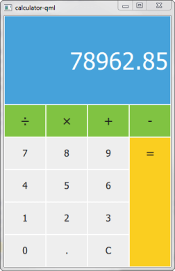

Qt SCXML Calculator QML Example
A Qt Quick application that implements the Calculator example presented in the SCXML Specification.

Calculator uses Qt SCXML to implement the Calculator Example presented in the SCXML Specification.
The state machine is specified in the statemachine.scxml file and compiled into the CalculatorStateMachine class. The user interface is created using Qt Quick.
Running the Example
To run the example from Qt Creator, open the Welcome mode and select the example from Examples. For more information, visit Building and Running an Example.
Compiling the State Machine
We link against the Qt SCXML module by adding the following line to the .pro file:
QT += widgets scxml
We then specify the state machine to compile:
STATECHARTS = ../calculator-common/statemachine.scxml
The Qt SCXML Compiler, qscxmlc, is run automatically to generate statemachine.h and statemachine.cpp, and to add them to the HEADERS and SOURCES variables for compilation.
Instantiating the State Machine
We make the generated CalculatorStateMachine class available to QML by registering it as a QML type in the calculator-qml.cpp file:
#include "statemachine.h" int main(int argc, char *argv[]) { QGuiApplication app(argc, argv); qmlRegisterType<CalculatorStateMachine>("CalculatorStateMachine", 1, 0, "CalculatorStateMachine"); QQmlApplicationEngine engine; engine.load(QUrl(QStringLiteral("qrc:/calculator-qml.qml"))); if (engine.rootObjects().isEmpty()) return -1; return app.exec(); }
To use the CalculatorStateMachine type in a QML file, we import it:
import CalculatorStateMachine 1.0
We instantiate a CalculatorStateMachine and listen to the updateDisplay event. When it occurs, we change the text on the calculator display:
CalculatorStateMachine {
id: statemachine
running: true
EventConnection {
events: ["updateDisplay"]
onOccurred: resultText.text = event.data.display
}
}
When users press the calculator buttons, the buttons submit events to the state machine:
Button {
id: resultButton
x: 3 * width
y: parent.height / 5
textHeight: y - 2
fontHeight: 0.4
width: parent.width / 4
height: y * 4
color: pressed ? "#e0b91c" : "#face20"
text: "="
onClicked: statemachine.submitEvent("EQUALS")
}